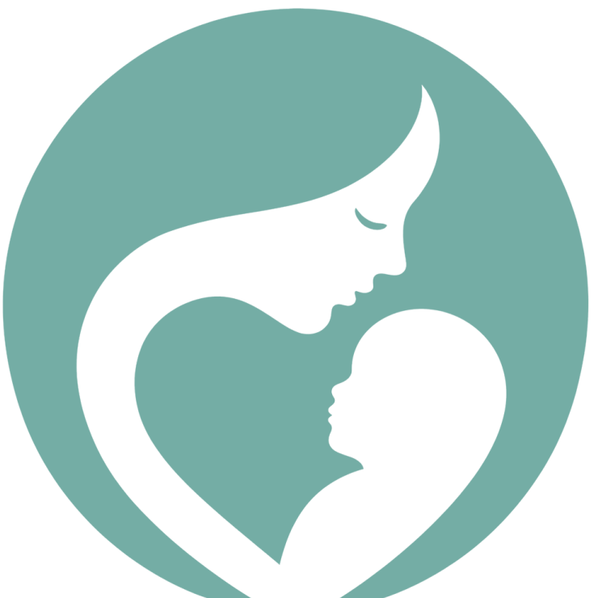
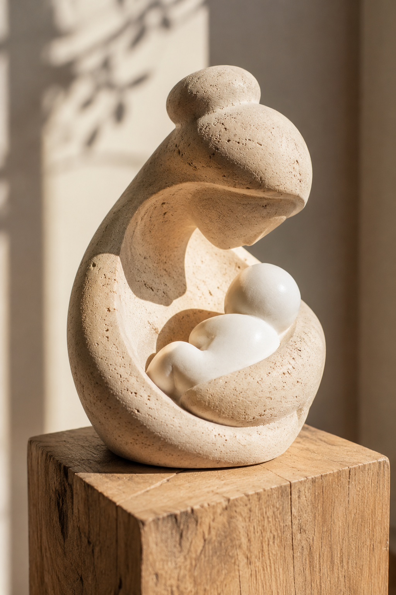
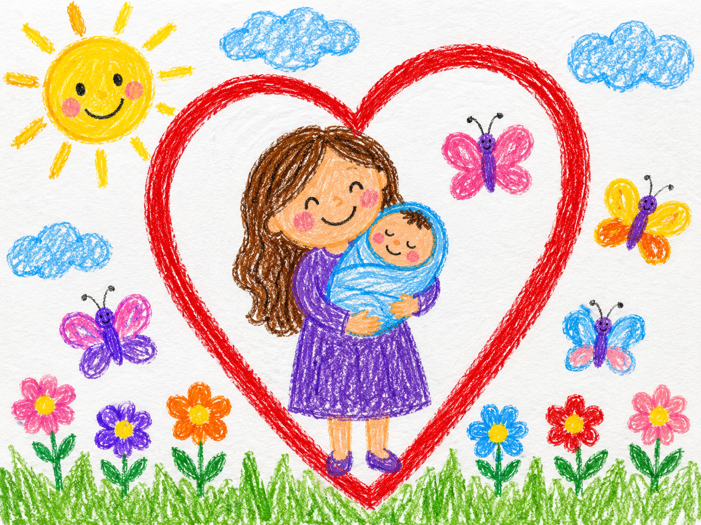
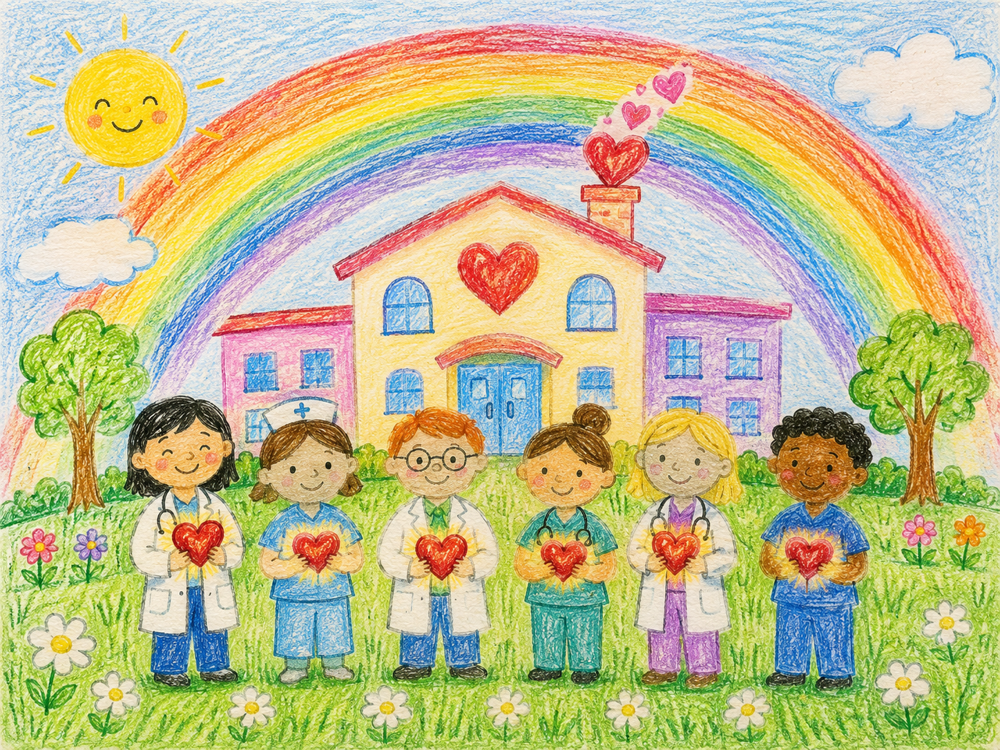
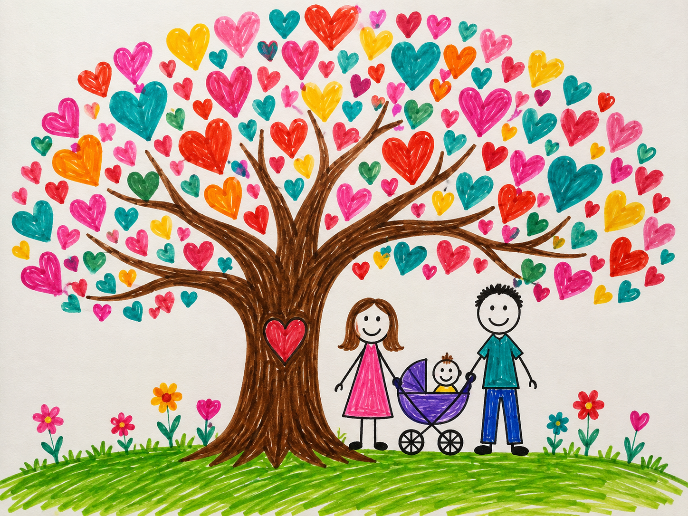

Od pierwszych chwil życia wspieramy kobiety w ciąży, mamy po porodzie, wcześniaki i noworodki oraz ich rodziny.

Dobra opieka okołoporodowa to nie tylko procedury i leczenie. To także rozmowa, zrozumienie, obecność bliskich i poczucie, że rodzina nie jest sama.
Pacjentki hospitalizowane na oddziale patologii ciąży, kobiety w ciąży powikłanej oraz mamy po porodzie i w okresie połogu.
Wcześniaki i noworodki wymagające specjalistycznej opieki oraz rodzice dzieci długo hospitalizowanych w oddziale neonatologii.
Mama · Wcześniak · Noworodek · Rodzina
Stowarzyszenie „Serce Mamy” powstało przy Klinice Położnictwa i Patologii Ciąży z Oddziałem Neonatologii — z inicjatywy lekarzy, którzy każdego dnia opiekują się kobietami w ciąży, mamami po porodzie i noworodkami wymagającymi specjalistycznej opieki. Poniżej znajdziesz szybkie skróty do najważniejszych części serwisu.
Z serca
Bo za każdą liczbą i każdym programem stoi prawdziwa rodzina, miłość i nadzieja.



Nasza misja
Naszą misją jest poprawa jakości i komfortu opieki okołoporodowej nad kobietą ciężarną, mamą po porodzie, wcześniakiem, noworodkiem oraz ich rodziną.